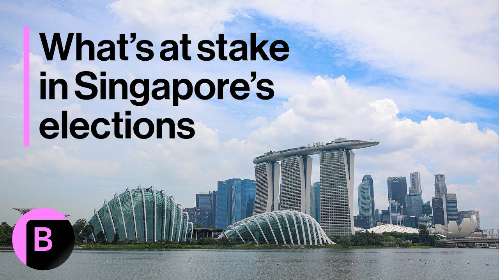

来B站一起耍【Global每日英语简报】
【新加坡大选：关键议题是什么】
Summary: Singapore's new Prime Minister Lawrence Wong faces his first electoral test amid global trade shifts, seeking a strong mandate while navigating Trump's tariffs, China relations, and domestic cost-of-living concerns, as the ruling party introduces new candidates during a leadership transition.
摘要： 新加坡新任总理黄循财面临首次选举考验，正值全球贸易格局变化之际，他寻求强有力的执政授权，同时需应对特朗普关税政策、对华关系及国内生活成本问题，执政党在领导层过渡期间推出大量新候选人。

⏱️ Estimated Reading Time: 2 min
Singapore's Lawrence Wong faces his first electoral test since taking over as Prime minister and is seeking a strong mandate to govern at a time of major shifts in the global trading order.
新加坡总理黄循财上任后首次面临选举考验，他寻求在全球化贸易秩序重大变革时期获得强有力的执政授权。
A system that Singapore's trade reliant economy has long benefited from.
新加坡依赖贸易的经济长期受益于这一体系。
The country will have to navigate Trump's tariffs and balance relations with China, its largest trading partner for voters.
该国需应对特朗普的关税政策，并平衡与最大贸易伙伴中国的关系，以争取选民支持。
Bread and butter issues remain top of mind.
民生问题仍是首要关注点。
Singaporeans face elevated prices from food to housing, though inflation has eased and authorities have rolled out a slew of measures to help people cope.
新加坡人面临从食品到住房的价格上涨，尽管通胀已缓解，政府也推出了一系列措施帮助民众应对。
Questions linger on the extent in which the ruling party can ride the momentum from handouts and subsidies into the election, or whether different generations of Singaporeans have different priorities.
执政党能否借助补贴和援助的势头赢得选举，或不同世代的新加坡人是否有不同优先事项，这些问题仍存疑。
The ruling People's Action Party lost more seats to the Opposition in the 2020 election and saw a drop in its vote share amid a political transition.
执政党人民行动党在2020年大选中失去更多席位给反对党，并在政治过渡期间得票率下降。
A number of ministers have recently announced their retirement and the PAP is fielding its largest number of new candidates in recent years.
多名部长近期宣布退休，人民行动党正推出近年来最多新候选人。
Singapore's external challenges come at a sensitive time as its leaders hand over the reins to the next generation.
新加坡的外部挑战正值领导层向新一代交权的敏感时期。
April Hong. Bloomberg News, Singapore.
彭博新闻社，新加坡，April Hong。